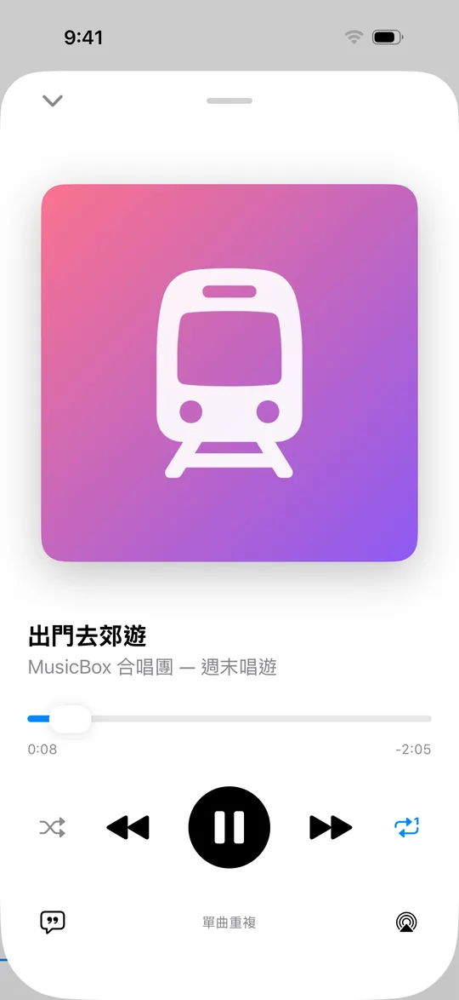

✈️ 離線也能聽
歌就存在手機裡，
歌就存在手機裡，
沒有訊號也不怕
不是串流，所以不用等緩衝、不吃行動網路。飛機上、隧道裡、山上露營，打開就能播。
- 完全不需要網路
音樂檔案存在手機上，播放不連線。 - 不用帳號、不用訂閱
下載就能用，不必註冊，也沒有月費。 - 鎖定螢幕繼續播
循環、單曲重複、隨機播放，一鍵切換。 - 回到家投放到 HomePod
播放畫面右下角的 AirPlay，送到 HomePod 或喇叭。

📵 沒有訊號 ▶︎ 照樣播放 🔁 單曲／整張循環